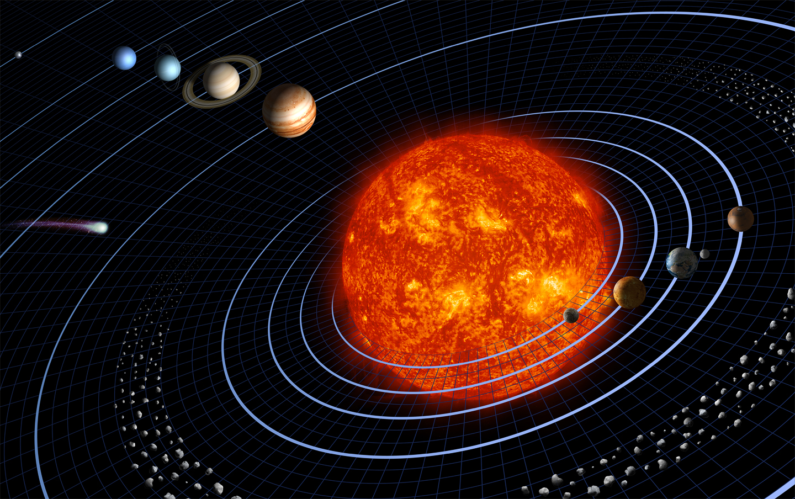
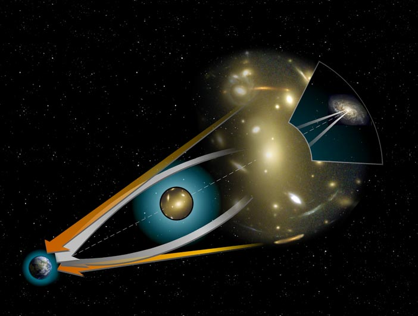

Planets orbit the Sun following Kepler's laws. Period ∝ a3/2 (semi-major axis). Inner planets orbit faster — Mercury completes a year in just 88 Earth days, while Neptune takes 165 years.

Solar system — Sun and planets

Gravitational lensing — light bent by massive objects